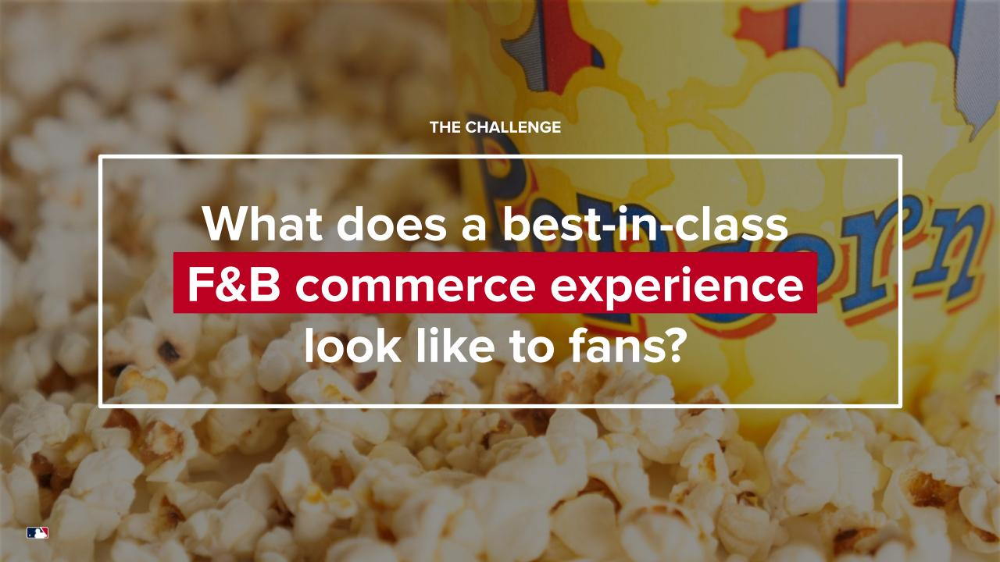

In-Venue Commerce Research (MLB)
Reframed a throughput problem as a behavioral challenge for 30 MLB clubs
Fans expressed dissatisfaction with food and beverage options, citing price, quality, and availability, while actual purchasing behavior remained inconsistent and difficult to improve.
Teams believed that improving concession stand speed and throughput would directly increase sales.
- 1.Fans weren't buying more because they feared missing key moments in the game.
- 2.Spending was suppressed not by line speed, but by cognitive load, social flow, and attention limits.
- Fans maintain two mindsets simultaneously: Researching (logistical) and Ritualizing (emotional)
- Fans alternate between two modes: Focused (goal-oriented) and Exploring (open to influence)
- Purchasing often conflicts with fear of missing key moments
- Cognitive load and fragmented information reduce decision confidence
- Group dynamics, especially for parents, amplify friction and hesitation
- "Faster service" does not resolve FOMO or uncertainty

Teams recognized they lacked visibility into the behavioral drivers of concession decisions and began shifting toward structured experimentation and cross-league learning rather than relying on assumptions or vendor solutions.
Teams became more receptive to behavior-led analysis instead of operational assumptions about throughput and efficiency.
If you're working on something challenging, let's talk!
I work with teams tackling complex problems where behavior, context, and systems shape outcomes.
Currently available for consulting or full-time roles in the New York Metro Area or remotely.